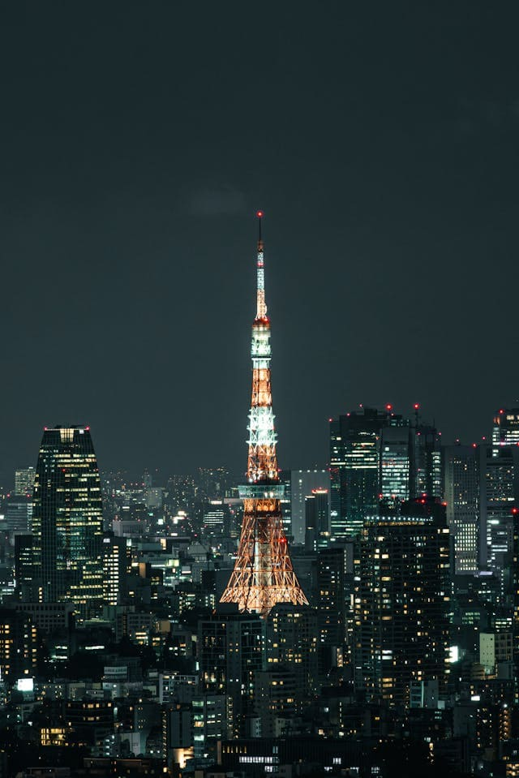
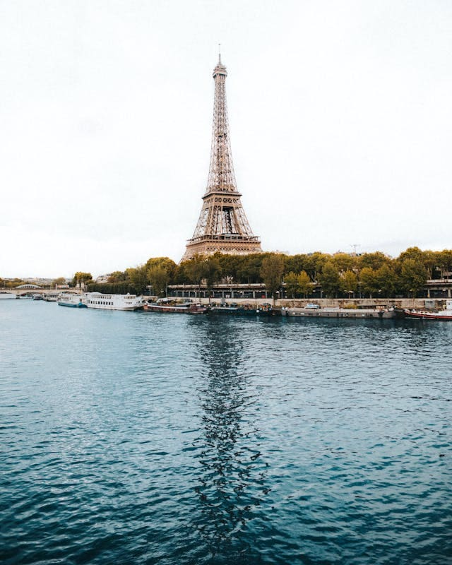
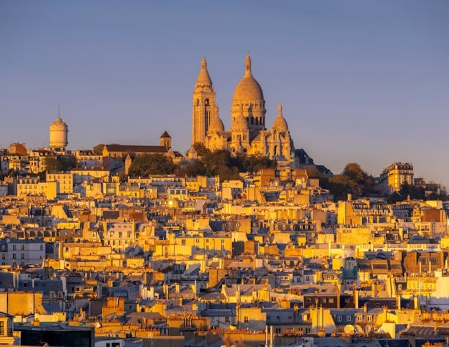
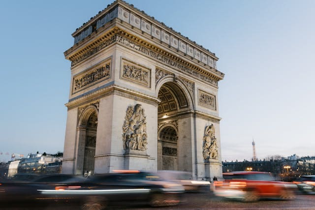

Things to Do in Paris
Explore numerous interesting things that can be done in Paris as it is among the best cities to visit for a romantic holiday. It doesn’t matter if you are interested in history, curious about art, keen on shopping, or interested in eating in the best restaurants – you could find all of that in Paris.

Night tour of the Eiffel Tower
Want to get swayed by the lights of the Eiffel Tower at night? A panoramic view is expected for you here!

Seine River Cruise
There is no better way to enjoy beautiful sights than on a cruise on the River Seine, which offers many landmarks to view.

Visit Montmartre
Stroll through Montmartre, climb up the Sacré-Cœur, and eat in great cafes.

Shop at Champs-Élysées
Discover Paris’ famous street dedicated to shopping exclusive brands and small specialty stores.